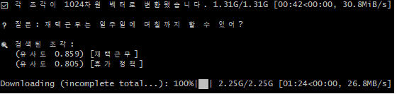

파트너와 함께 시작하는 프로젝트의 시작.
파트너(Claude AI)와 함께 RAG 프로젝트를 진행하려고 한다.
일단 환경 세팅 등을 진행하고 REG 코딩을 진행하였다.
그러면서 이 친구가 RAG의 4단계를 전부 담은 파일 하나를 던져주며 공부해보라고 하였다.
[RAG의 4단계]
- 문서 준비 → 작은 사내 FAQ를 텍스트로 넣어둠
- 임베딩 + 저장 → 문서 조각들을 숫자 벡터로 변환 (의미를 좌표로 바꾸는 것)
- 검색(Retrieval) → 질문도 벡터로 바꾼 뒤, 가장 가까운 조각을 찾음
- 생성(Generation) → 찾은 조각을 Claude에게 같이 주고 답을 만들게 함
임베딩(Embedding) 이란 무엇인가?
컴퓨터는 숫자 ‘0, 1’로 이루어진 기계어로만 이해할 수 있기 때문에 단어나 문장을 숫자로 변환해줘야 한다고 한다.
이때 단순히 단어에 번호를 매기는 것이 아니라, 단어의 ‘의미’와 비슷한 정도’를 담은 숫자들로 바꾸는 것을 임배딩이라고 한다.
위의 말이 너무 이해하기 힘들어서 예시를 받아서 알아보았다.
[예시]
아래와 같은 단어를 숫자 2개로 바꾼다고 친다. (이 숫자는 임베딩 기술이 스스로 학습해서 정한 좌표다.)
사과: [1.0, 0.9], 딸기: [0.9, 0.8], 자동차: [-0.8, -0.7]
그 숫자들로 그래프에 좌표를 찍어보면 ‘사과’와 ‘딸기’는 아주 가까운 곳에 모여 있고 컴퓨터는 숫자가 비슷하니 의미가 비슷하다 라고 판단한다고 한다.
반면 ‘자동차’는 그래프에서 좌표가 멀기 때문에 관계없는 단어라고 판단한다고 한다.
그런데 예시는 숫자 2개만 사용했지만 인공지느의 경우에는 수백 ~ 수천 개의 숫자로 표현한다고 한다.
요약 하자면
- 의미를 담는다 : 단어의 특징(속성)을 수많은 숫자로 쪼개서 기록한다.
- 비슷한 정도를 담는다 : 비슷한 특징을 가진 단어들은 숫자 좌표상에서 서로 가까운곳에 배친된다.
정확히 딱 이거다라고 떠오르지는 않지만(이에 대해서는 더 공부해볼 예정이다.) 도서관의 책을 비슷한 주제로 모아놓는 작업이라고 이해하고 다음으로 넘어갔다.
그래서 왜? 임베딩을 하는건데?
AI가 문맥을 파악하고 대화할 수 있는 이유가 임베딩 덕분이라고 한다.
- 단어의 뜻을 이해한다 : 글자 모양이 아닌 단어가 어떤 상황에 쓰이는지 좌표로 기억
- 비슷한 단어 찾음 : ‘강아지’를 검색하면 ‘개’나 ‘멍멍이’ 처럼 비슷한 단어도 함게 찾을수 있음.
- 추론이 가능함 : [왕 - 남자 + 여자 = 왕비]같은 계산을 숫자로 할 수 있다.
임베딩 한줄요약!
임베딩은 컴퓨터가 단어나 문장의 ‘의미’를 이해할 수 있도록, 비슷한 것끼리 가까운 위치에 놓인 ‘숫자 좌표’로 바꿔주는 과정
그런데 여기서 의문 하나더!
임베딩에 대해서 조사해 봤는데 ‘벡터’로 변환한다고 위에 설명이 있다. 그럼 벡터에 대해서도 알아봐야 겠다고 생각한 나는 파트너에게 물어보았다.
벡터와 벡터화
벡터는 ‘여러 개의 숫자가 순서대로 적힌 리스트’라고 한다. 예를 들어 위에 사과, 딸기 자동차의 좌표처럼 [0.1,-0.5,0.8] 처럼 말이다.
이해하기 쉽게 여기도 예시를 들어달라고 하였다.
지금부터 ‘과일’ 이라는 단어를 벡터화 해봅시다. 이 단어의 특징 3가지만 숫자로 일단 뽑아봅시다
1.달콤하고 2.빨간색이고 3.껍질이 있다
그리고 각 단어에게 점수를 메깁시다 (0~1점)
| 단어 | 달콤함 | 빨간색 | 껍질 있음 | 결과(벡터) |
|---|---|---|---|---|
| 사과 | 0.8 | 0.9 | 0.8 | [0.8,0.9,0.8] |
| 바나나 | 0.9 | 0.1 | 0.9 | [0.9, 0.1, 0.9] |
| 포크 | 0.1 | 0.1 | 0.0 | [0.1, 0.1, 0.0] |
이렇게 숫자로 만들어두면 거리계산으로 비슷함 여부를 판단하는것으로 보인다. 그리고 이러한 계산으로 거대한 3D 지도를 머릿속에 그린다고 한다.
이런식으로 연결해놓은건가?
문제가 발생했다!!!
해당 파일을 실행하려고 하자 에러가 나오기 시작했다.
C:\Users\myComputer\AppData\Local\Programs\Python\Python314\python.exe: can't open file 'C:\\llm-rag-qa\\venv\\rag.py': [Errno 2] No such file or directory
이 문제는 간단했다 ‘python rag.py’ 로 실행을 시켰는데 내가 ‘reg.py’로 파일을 만든것이다.
이름을 바꾸고 다시 재시작 하자 또 문제가 발생했다.
Traceback (most recent call last):
File "C:\llm-rag-qa\rag.py", line 16, in <module>
from sentence_transformers import SentenceTransformer
File "C:\llm-rag-qa\venv\Lib\site-packages\sentence_transformers\__init__.py", line 10, in <module>
from sentence_transformers.backend import (
...<3 lines>...
)
File "C:\llm-rag-qa\venv\Lib\site-packages\sentence_transformers\backend\__init__.py", line 3, in <module>
from .load import load_onnx_model, load_openvino_model
File "C:\llm-rag-qa\venv\Lib\site-packages\sentence_transformers\backend\load.py", line 7, in <module>
from transformers.configuration_utils import PretrainedConfig
File "C:\llm-rag-qa\venv\Lib\site-packages\transformers\configuration_utils.py", line 32, in <module>
from .generation.configuration_utils import GenerationConfig
File "C:\llm-rag-qa\venv\Lib\site-packages\transformers\generation\configuration_utils.py", line 61, in <module>
from .logits_process import SynthIDTextWatermarkLogitsProcessor, WatermarkLogitsProcessor
File "C:\llm-rag-qa\venv\Lib\site-packages\transformers\generation\logits_process.py", line 21, in <module>
import torch
File "C:\llm-rag-qa\venv\Lib\site-packages\torch\__init__.py", line 287, in <module>
_load_dll_libraries()
~~~~~~~~~~~~~~~~~~~^^
File "C:\llm-rag-qa\venv\Lib\site-packages\torch\__init__.py", line 270, in _load_dll_libraries
raise err
OSError: [WinError 1114] DLL 초기화 루틴을 실행할 수 없습니다. Error loading "C:\llm-rag-qa\venv\Lib\site-packages\torch\lib\c10.dll" or one of its dependencies.
처음에는 파이썬 버전 때문이라고 하여 3.14 -> 3.12로 낮췄다.
하지만 동일한 에러가 발생하여 파트너에게 물어보니
“Visual C++ Redistributable x64” 파일을 받아 설치 후 실행해 보라고 하였다.
재시작 하자 다음 에러가 또 발생했다.(ㅠㅠ)
Traceback (most recent call last):
File "C:\llm-rag-qa\rag.py", line 58, in <module>
embed_model = TextEmbedding("intfloat/multilingual-e5-small")
^^^^^^^^^^^^^^^^^^^^^^^^^^^^^^^^^^^^^^^^^^^^^^^
File "C:\Users\myComputer\AppData\Local\Programs\Python\Python312\Lib\site-packages\fastembed\text\text_embedding.py", line 126, in __init__
raise ValueError(
ValueError: Model intfloat/multilingual-e5-small is not supported in TextEmbedding. Please check the supported models using `TextEmbedding..list_supported_models()`
에러 내용을 확인해보니
fastembed 라이브러리가 해당 모델 이름(intfloat/multilingual-e5-small)을 직접 인식하지 못해서 발생하는 문제라고 한다.
임의의 파이썬 파일을 만든 후에 아래에 대한 내용을 넣고 돌려봤다.
from fastembed import TextEmbedding
print(TextEmbedding.list_supported_models())
모델이름이 ‘intfloat/multilingual-e5-small’ 이 아닌 ‘intfloat/multilingual-e5-large’ 인걸 확인했다. 수정하고 진행하자 정상 작동하는걸로 보였다.

*항해 첫번째날 갑자기 커다란 바람으로 흔들리기 시작……. *